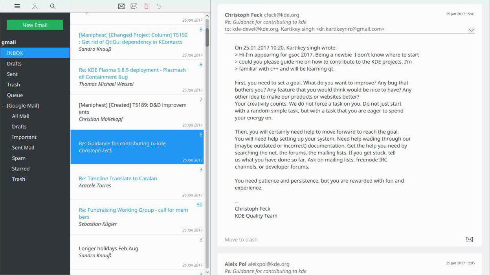

Kube Project Features and Goals
Nobody is happy with “groupware” applications, and many have fled to web applications as a result even though they offer a fraction of the possibilities a native application does and often means leaving your data in someone else’s hands. Despite this low satisfaction, a modern alternative has yet to be offered. This is the purpose of Kube: beautiful, modern communication in a reliable, high-performance native application for your desktop, laptop and mobile devices.

Kube is in early development but our goals are clear. To create a stable, understandable and effective communication and collaboration platform for end users and project managers alike. Our key-stone feature of the application is the email client, and that is our initial focus.
Kube is a modern communication and collaboration client built with QtQuick on top of a high performance, low resource usage core. It provides online and offline access to all your mail and contacts. With a strong focus on usability, the team works with designers and UX experts from the ground up, to build a product that is not only visually appealing but also a joy to use.
- An easy to use and beautiful UI that let’s you focus on what you need to accomplish.
- Fast and powerful when you need it, getting out of your way when you don’t.
- Full offline access so you can rely on Kube no matter where you are.
- GPG based end-to-end encryption.
- Keyboard navigation to get around quickly.
- Fulltext search.
Development
We’re aiming to produce a product that does what it does well, even if that means not catering to all usecases. We want a codebase that is maintainable by a small team, and that can move fast. We want it to be cheap and easy to prototype new features, without compromising the quality of the rest of the system. Last but not least, we want portability accross a variety of platforms, including mobile, not only witha portable codebase, but also with different UI’s catering to the various formfactors.
For Developers:
- A small and concise codebase that is easy to modify and evolve.
- The UI is written completely in QtQuick, allowing for quick prototypes.
- Integration with third party applications:
- Since components are self contained and made available as plugins, external applications can load fully functional Kube components.